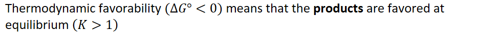
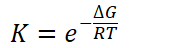

{width="9.729166666666666in" height="0.6875in"}
At equilibrium, no net change in the concentration of reactants and products occurs so:
{width="8.979166666666666in" height="0.3541666666666667in"}
{width="1.7916666666666667in" height="0.5in"}
{width="2.7291666666666665in" height="0.3333333333333333in"}
{width="8.125in" height="0.3541666666666667in"}
{width="8.104166666666666in" height="0.3541666666666667in"}
{width="5.75in" height="0.3541666666666667in"}